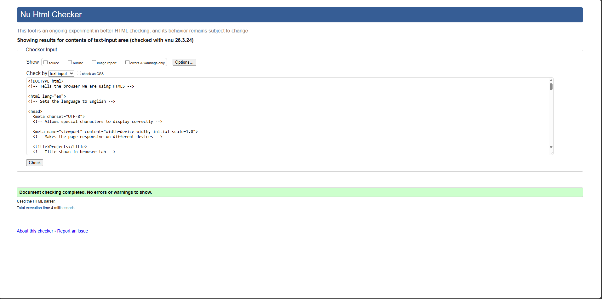
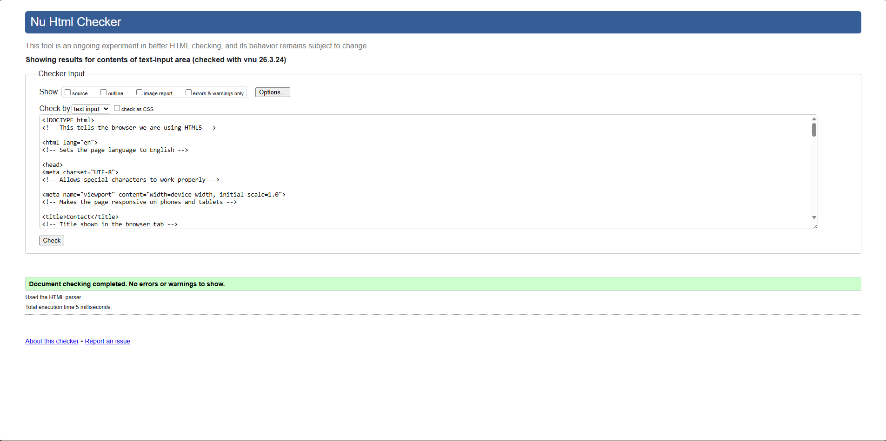
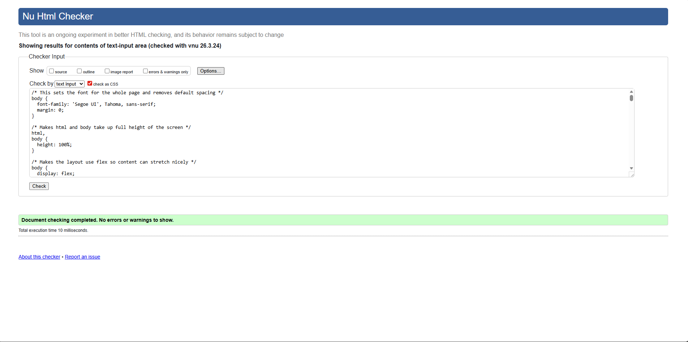

Website Development Report
Introduction
This project was my first experience learning web development using HTML and CSS. At the beginning of the module, I had very little knowledge about how websites are built. I found it difficult to understand how HTML structure and CSS styling work together, especially when trying to position elements correctly on the page. However, over time, I became more confident and improved my skills through practice.
Module Experience
I found this module challenging but interesting. At the beginning, I had little experience with HTML and CSS, so I found it difficult to understand how to structure and style webpages.
However, as I continued working on my website, I became more confident and started to understand how everything works together. I especially enjoyed designing the layout and seeing my progress over time.
Overall, this module helped me improve my problem-solving skills and build a strong foundation in web development.
Development Process
The website I created is a portfolio consisting of five pages: Home, Projects, Contact, Video Demo, and Report. All pages are connected using a navigation bar and follow a consistent design. During development, I focused on making the website simple, clear, and easy to navigate. I worked step by step, starting with basic structure and then adding styling and layout.
Challenges and Learning
One of the biggest challenges I faced was working with CSS layouts. At first, I struggled with positioning elements and making everything look aligned. Sometimes elements would not appear where I expected, which made debugging difficult. However, by testing different solutions and researching online, I slowly started to understand how CSS works. This helped me improve my problem-solving skills.
Technical Implementation
From a technical perspective, I used CSS Grid to create a 2x2 layout on the projects page to display my work clearly. I also used Flexbox to centre content on the home page. Additionally, I made the website responsive using media queries so it works on both desktop and mobile devices. The hamburger menu was added to improve navigation on smaller screens.
Design Decisions
For the design, I chose a dark theme with a video background to create a modern and professional look. I used white text to ensure readability and added orange as an accent colour for buttons and hover effects. My design was influenced by modern portfolio websites that use minimal layouts and strong visual elements. I aimed to keep the design simple but visually appealing.
Tools and Version Control
I used GitHub to manage my project and track my progress. Making regular commits helped me stay organised and allowed me to see how my website improved over time. This also helped me understand the importance of version control in development.
Conclusion
Overall, this project helped me build a strong foundation in web development. I learned how to structure webpages, apply styling, and solve problems when things did not work as expected. If I were to improve this website in the future, I would add JavaScript for more interactivity and improve the contact form by connecting it to a backend service.
Validation
All HTML and CSS files were tested using W3C validation tools to ensure there were no major errors. Screenshots of the validation results are shown below.
Validation Screenshots
Below are the validation screenshots for each website file (HTML & CSS). All files were checked using W3C validators and contain no major errors.
Index.html

Project.html

Contact.html

Report.html

Video.html

Main.css

Video Demonstration
The video demonstration of my website can be accessed here:
https://your-video-link